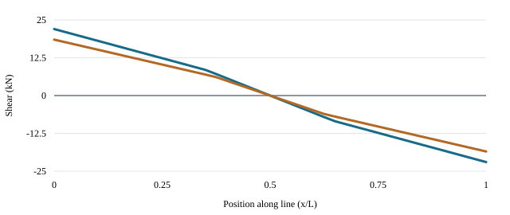
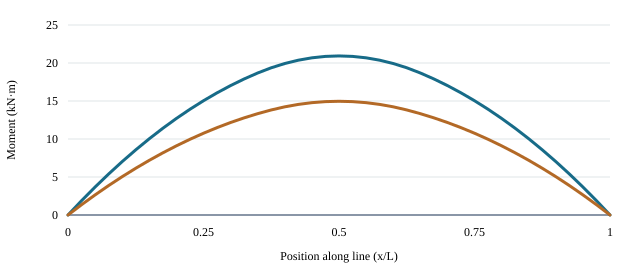

Flight dead load
8.41 kPa
Worksheet assumptions
Flight and landing loads, conditional support reactions and bending moments. Values from the working Google Sheet, read 24 November 2026.
Worksheet assumptions
1.5(DL + LL)
Same worksheet combination
Original report assumptions are retained separately from drawing dimensions. Values are not a confirmed physical stair model.
| Parameter | Value | Unit | Source and limitation |
|---|---|---|---|
| Flight riser | 170 | mm | Report pp64–65; STR-16 says 180 |
| Flight tread | 254 | mm | Report pp64–65; STR-16 says 255 |
| Flight waist | 150 | mm | Report assumption; worked flexure uses 127 |
| Finish thickness | 50.8 | mm | Worksheet; finish geometry inferred |
| Flight concrete density | 24 | kN/m³ | Worksheet; other report densities differ |
| Full-width flight | 1.2 | m | Worksheet only; physical width not verified |
| Flight live load | 3 | kPa | Occupancy unresolved |
| Landing waist | 150 | mm | Report worksheet |
| Landing concrete density | 25 | kN/m³ | Report worksheet |
| Landing finish | 1.22 | kPa | Report worksheet |
| Landing live load | 3 | kPa | Occupancy unresolved |
| Worksheet DL factor | 1.5 | – | Worksheet combination |
| Worksheet LL factor | 1.5 | – | Worksheet combination |
| General report DL factor | 1.2 | – | Report p19 §2.8.1 |
| General report LL factor | 1.5 | – | Report p19 §2.8.1 |
Both reported load combinations are shown. Neither is selected as the governing design basis.
| Quantity | Value | Unit |
|---|---|---|
| Flight dead load | 8.407 | kPa |
| Flight service | 11.407 | kPa |
| Flight worksheet factored | 17.111 | kPa |
| Flight general report factored | 14.589 | kPa |
| Flight worksheet line load | 20.533 | kN/m |
| Flight general report line load | 17.506 | kN/m |
| Landing dead load | 4.97 | kPa |
| Landing service | 7.97 | kPa |
| Landing worksheet factored | 11.955 | kPa |
| Landing general report factored | 10.464 | kPa |
| Landing worksheet line load | 14.346 | kN/m |
| Landing general report line load | 12.557 | kN/m |
Symmetric simple supports and a three-zone load pattern are assumed. Reactions are inferred from the source shear; spans and support coordinates are not verified.
| Quantity | Flight AB | Flight BC | Unit |
|---|---|---|---|
| Inferred line length | 3.505 | 2.997 | m |
| Inferred central patch | 1.031 | 0.762 | m |
| Assumed reaction each | 21.979 | 18.481 | kN |
| Total reconstructed load | 43.958 | 36.962 | kN |
| Source peak M | 20.881 | 14.964 | kN·m |
| Computed peak moment | 20.931 | 14.963 | kN·m |
| Moment difference | 0.237 | -0.001 | % |


The diagrams represent the conditional line model only; they do not establish actual staircase reactions, effective spans or construction approval.